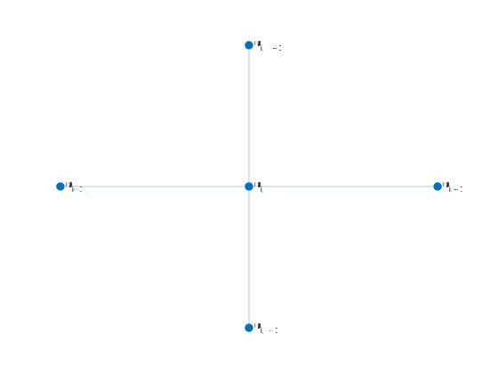

Deriving the 5-Point Skewed Stencil Equation for Finite Difference Approximation of Laplace's Equation
March 18, 2020
Usually when discussing Finite Difference methods in regards to Laplace's Equation $u_{xx} + u_{tt} = 0$, the traditional 5-point stencil looks like the one below.

Standard 5-point stencil
This has the discretization $$u_{xx}+u_{tt}\approx \frac{1}{h^2} \left(u_{i+1,j}+u_{i,j+1}-4u_{i,j}+u_{i-1,j}+u_{i,j-1}\right),$$ assuming a uniform grid with step-size $h$ in both the space and time directions. But there is another 5-point stencil that is very similar to the standard one. We call this a "skewed" stencil because instead of using the nodes in the cardinal directions, this one uses the nodes on the diagonal.
Skewed 5-point stencil
One easy way to derive a finite difference formula from a given stencil is to just Taylor expand at each of the nodes, and see if that can be reduced to something usable. For this skewed stencil, we'll Taylor expansion at $\{u_{i-1,j-1},u_{i+1,j-1},u_{i-1,j+1}, u_{i+1,j+1}\}$, the nodes that radiate from the center $u_{i,j}$. We can use the fomula for Taylor expansion in 2 variables, and we'll only need up to the quadratic terms for our calculations.
$$f(x+h,y+k)=f(x,y)+hf_x(x,y)+kf_y(x,y)+\frac{1}{2}\left(h^2f_{xx}(x,y)+2hkf_{xy}(x,y)+k^2f_{yy}(x,y)\right)+\dots$$
This is an infinite sum, but we won't be needed all of inifnity for this. We're only going to need up the second order terms here, so we can disregard the higher order terms. Of course by doing this, we will introduce some error in our calculations, but I won't be doing any kind of error calculations in this post. There is a lot of information about error analysis for finite difference stencils, so you should look into that if you want an explanation. For those that are curious, the error for the standard and skewed 5-point stencil are the same, $O(h^2)$.
$$
\begin{aligned}
u(x-h, t-k) &\approx u(x,t)-hu_x-ku_t+\frac{1}{2}\left(h^2u_{xx}+2hku_{xt}+k^2u_{tt}\right) \\
u(x+h, t-k) &\approx u(x,t)+hu_x-ku_t+\frac{1}{2}\left(h^2u_{xx}-2hku_{xt}+k^2u_{tt}\right) \\
u(x-h, t+k) &\approx u(x,t)-hu_x+ku_t+\frac{1}{2}\left(h^2u_{xx}-2hku_{xt}+k^2u_{tt}\right) \\
u(x+h, t+k) &\approx u(x,t)+hu_x+ku_t+\frac{1}{2}\left(h^2u_{xx}+2hku_{xt}+k^2u_{tt}\right)
\end{aligned}
$$
We then add all of these together to get
$$u(x-h,t-k)+u(x+h,t-k)+u(x-h,t+k)+u(x+h,t+k)=4u(x,t)+2(h^2u_{xx}+k^2u_{tt})$$
Using our notation from the stencil above,
$$\frac{1}{2}\left(u_{i-1,j-1}+u_{i+1,j-1}-4u_{i,j}+u_{i-1,j+1}+u_{i+1,j+1}\right)=h^2u_{xx}+k^2u_{tt}$$
If we then assume a uniform grid so that $h=k$,
$$\frac{1}{2h^2}\left(u_{i-1,j-1}+u_{i+1,j-1}-4u_{i,j}+u_{i-1,j+1}+u_{i+1,j+1}\right) \approx u_{xx}+u_{tt}$$
Even though the standard and skewed stencils are different, their matrix representations are fundamentally equivalent. The skewed stencil has an extra factor of \frac{1}{2}, but this doesn't affect the global error insofar as it is the same as the standard stencil.